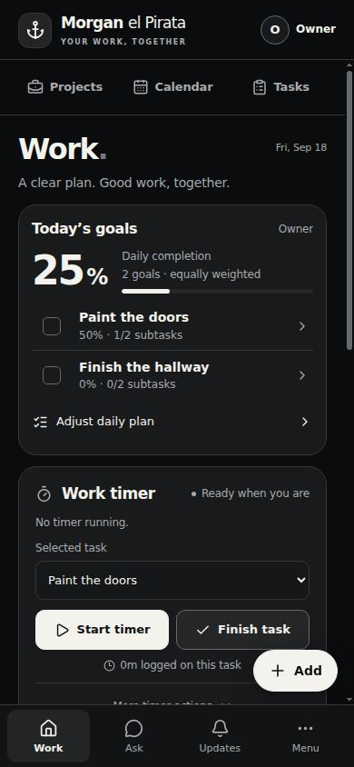
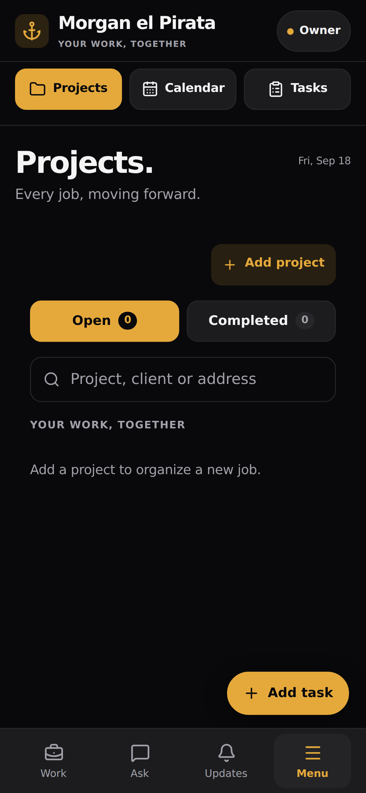
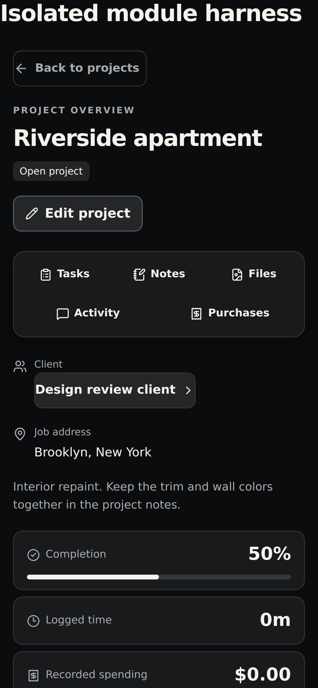
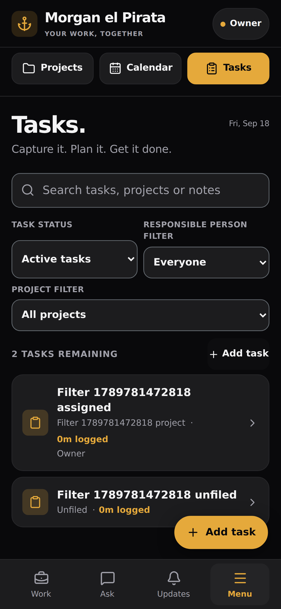
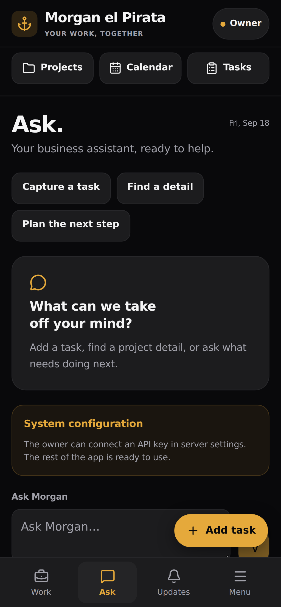
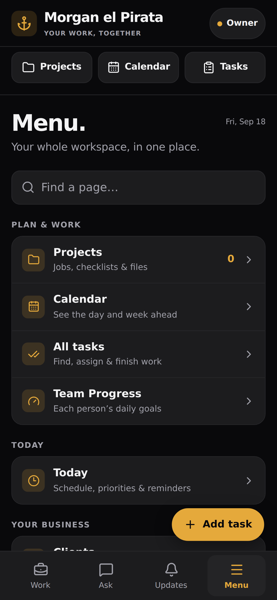
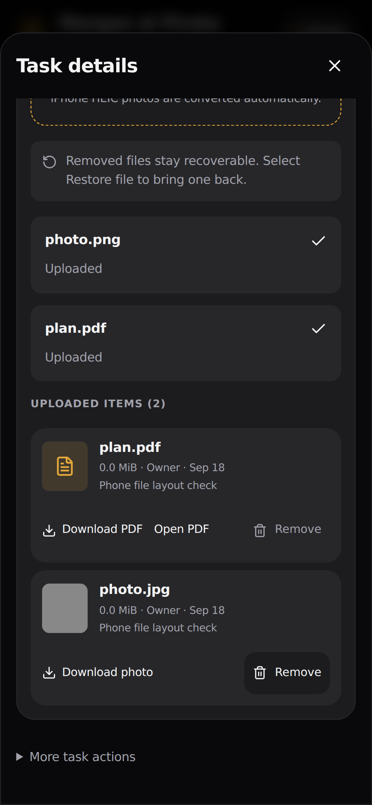
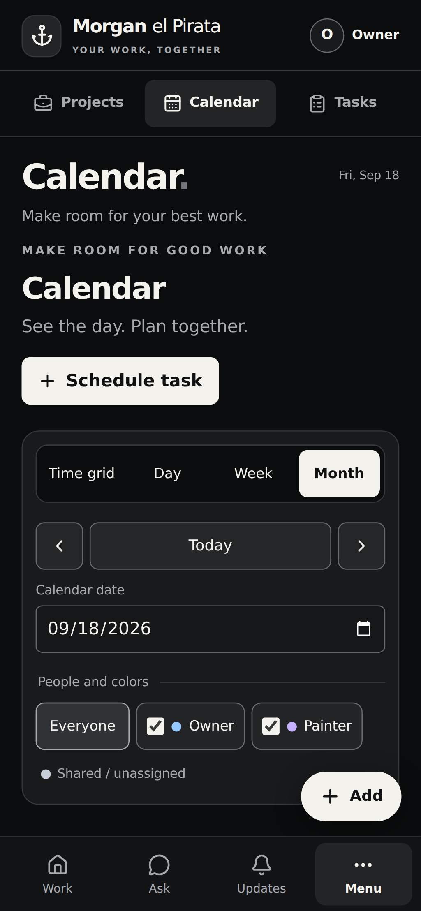

Screenshots, navigation map, and product schematic for design iteration
https://pirata.andresinbox.tech
Work landing

Projects

Project detail

Tasks

Ask

Menu

Files and uploads

Calendar

Connected Screen Map
Sign In
Work
Projects
Project Detail
Tasks
Task Detail
Ask
Updates
Menu
Calendar
Progress
Settings/Admin
Main connections: Sign In to Work. Work to Projects, Tasks, Calendar, Ask, and Add. Projects to Project Detail. Project Detail to Tasks, Updates, Notes, Files, and Client. Tasks to Task Detail. Menu to the full app: Projects, Calendar, Progress, Today, Inventory, Clients, Shopping, Files, Team, Settings, and owner-only admin.